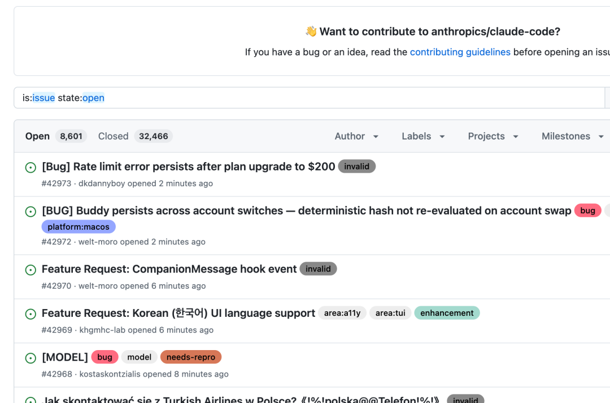
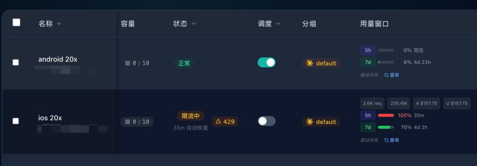
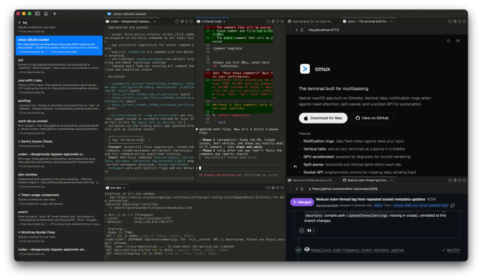
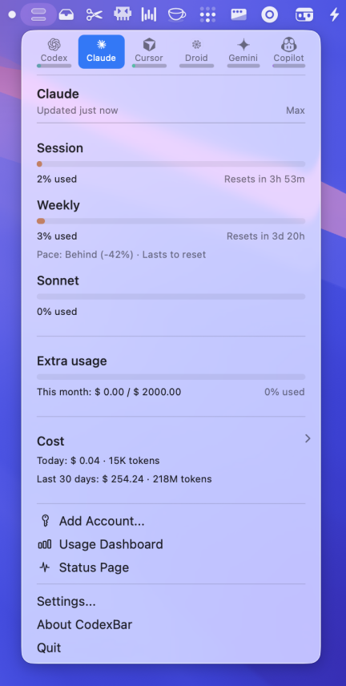
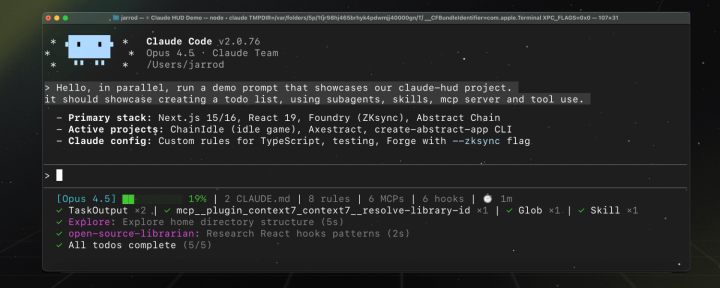
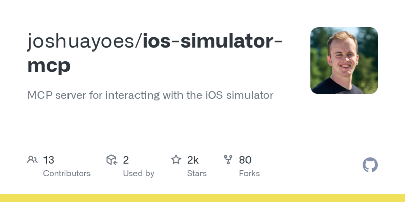
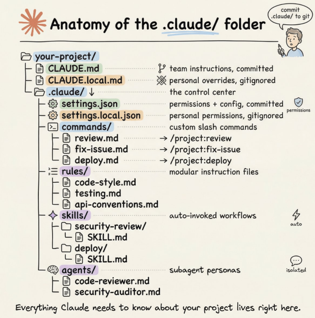
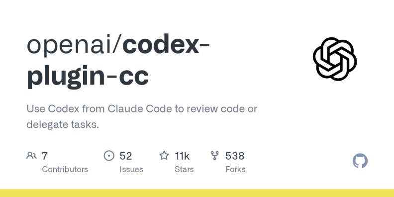

上周 Anthropic 在 Reddit 上承认："用户撞限速比我们预想的快得多。"有 Max 用户（$200/月）说 19 分钟烧完了 5 小时额度。有人说 30 天只有 12 天能正常用。有人说一个 hello 吃掉了 2% 的会话配额。GitHub 上有人逆向了 Claude Code 二进制，发现两个 prompt cache bug 导致 token 消耗悄悄膨胀了 10-20 倍。
我们团队在 Claude Code 上烧了 252 亿 token——Sub2API 后台下图，API 等价费用 $22,950。用这些 token 做了 Mana（@mana__app），一个让用户用自然语言创建原生 iPhone 应用的平台。日均十几个小时挂在 Claude Code 上，两个 Max x20 账号轮着用，每天消耗几亿 token 是常态。
▲ Sub2API 后台：总消耗 252 亿 token，API 等价费用 $22,950
我们从第一天就在跟这些问题打交道。下面是 250 亿 token 换来的经验。
一、这工具有多离谱
先说一个数字：我的 Sub2API 后台，总消耗 252 亿 token，API 等价费用 $22,950。如果按 API 计费而不是订阅，这笔钱够买一辆车。
但这不是重点。重点是——Claude Code 不想让你知道你烧了多少钱。
你输 /cost，它告诉你"订阅用户不需要关心费用"。Anthropic 不公布任何套餐的具体 token 额度，只说"Pro 是免费版的 5 倍"——5 倍是多少？不告诉你。有人逆向了 Claude Code 的二进制文件，发现了两个导致 prompt cache 失效的 bug，让实际 token 消耗悄悄膨胀了 10-20 倍。降级到旧版本 2.1.34 之后问题明显缓解。
社区的吐槽已经到了什么程度？有 Max 20x 用户（$200/月）说 19 分钟就烧完了 5 小时的额度。有人在 Reddit 说一个 hello 吃掉了 2% 的会话配额。有人说"30 天里我只有 12 天能用上 Claude"。GitHub 上有人写了一封致 Anthropic 的公开信，标题叫"Critical: Widespread abnormal usage limit drain"——我提了工单，没人回；我在 Twitter 上问，没人回；Reddit 上唯一的官方回复是"我们在调查"。
3 月 31 号，Anthropic 承认了："用户撞限速比我们预想的快得多。"
GitHub Issue 区更是灾难现场。 Claude Code 的 issue tracker 目前有 6000+ 个 open issue，其中 3554 个标记为 bug。每周新增 2000-2500 个。有人做过分析：49-71% 的 issue 关闭是 bot 自动执行的——Anthropic 用 Opus 4.6 做分类，用 dedupe bot 标记重复，然后自动关闭。问题是，被标记为"重复"的 issue 会自动锁定并关闭，而它指向的"原始 issue"可能也早就被关了。
一个 ECONNRESET 的 bug 从 2025 年 12 月就有人报，到 2026 年 3 月还在反复被关闭又被重新提交。有人统计了 12 个相关 issue，70 多条社区评论提供了 root cause 分析，零条 Anthropic 工程师的回复。Hacker News 上有一个帖子专门讲这事：Claude Code 的 issue 页面 60 天不活跃就自动关闭，评论区一片嘘声。

▲ Claude Code GitHub Issue Tracker：8000+ open issues，每周新增 2000+
同一天，Claude Code 51 万行源码因为 .npmignore 漏了一个 .map 文件，被意外发布到了 npm。这已经是第二次了——2025 年 2 月就出过一次。源码里有个叫 "Undercover Mode" 的系统专门防止 AI 在 git commit 里泄露内部信息，结果 Anthropic 自己把整个源码发了出去。
不过泄露出来的东西确实让人对这个产品刮目相看：三层记忆压缩系统、42 个按需加载的工具、KAIROS 自主后台 daemon、ULTRAPLAN 云端远程规划——VentureBeat 的评价是"这不是 LLM 的包装壳，是一个完整的软件工程操作系统"。
我的判断一样：Claude Code 是当下最好的 AI 编程工具，没有之一。但 Anthropic 的运营水平配不上这个产品。
二、降智是真的，不是你的错觉
先讲一个技术事实：Anthropic 官方在 2025 年 8 月承认过，由于推理堆栈（inference stack）的更新，Opus 4.1 和 Opus 4.0 确实出现了质量下降。根本原因是 XLA 编译器的一个 bug——模型用 bf16 浮点计算下一个 token 的概率，但 TPU 需要 fp32，精度不匹配导致模型经常选不到"最优解"token。一个微小的概率偏差，累积起来就是整体回复质量的大幅下降。
说人话：Claude 本来要说"？"，结果因为算错了概率说成了"。"。一两次没关系，几百次之后整个输出就是一坨。
这个问题后来回滚了。但 2026 年 3 月，类似的问题又来了：
·status.claude.com 记录：3 月 21 日 Opus 4.6 和 Sonnet 4.6 同时出现大面积报错。3 月 26-27 日网络性能降级导致服务中断。3 月 31 日到 4 月 1 日，Opus 和 Sonnet 请求超时率飙升。
·社区实测："凌晨两点用起来顺畅无比，白天高峰期被限流之后就非常糟糕。"——这不是降智，这是 Anthropic 在高峰期偷偷降了你的服务质量。
·版本回退有效：有人把 Claude Code 从最新版降到 2.1.34，token 消耗立刻恢复正常。说明不是模型变笨了，是客户端代码有 bug。
所谓"降智"，三分之一是真的模型问题，三分之一是 prompt cache 失效导致 token 爆炸（上下文被截断后质量当然差），三分之一是高峰期限流。
怎么应对？
1.装 CodexBar 监控用量，异常消耗第一时间发现
2.关注 status.claude.com，有 incident 的时候别硬上，换个时间或者切 Codex 干活，或者一些“智商监听”站点。
3.觉得明显变笨了，先 `/clear` 再试——大概率是上下文积累到触发了自动压缩，截断之后模型丢失了关键信息
4.高峰期（美东 8am-2pm）降低期望，或者直接错峰用
5.版本有问题就降级：npx @anthropic-ai/claude-code@2.1.34 可以跑指定版本
三、80% 的 token 其实白烧了
我的判断是，大部分人使用 Claude Code 时，有至少一半的 token 消耗是不必要的。四个主要的"吞金陷阱"：
第一，上下文雪球。 Claude Code 为了保持对话连续性，每次交互都会完整加载所有历史对话和上传的文件。对话越久，每次请求的 token 越多——像滚雪球一样膨胀。更讽刺的是，当上下文超过一定长度，模型开始"降智"——遗忘之前的指令，逻辑开始混乱。你花了更多的钱，反而得到了更差的结果。
第二，模型选错。 Opus 比 Sonnet 贵几倍，但在大部分日常编程任务上，能力差距远没有价格差距那么大。我见过太多人一上来就挂 Opus，写个 CSS 也用 Opus，完全没必要。
第三，MCP 工具的隐性消耗。 如果你装了很多 MCP 服务器（Chrome DevTools、数据库、各种插件），每个工具的定义都会被注入到上下文里。实测数据显示，MCP 工具描述可以轻松吃掉 10% 的上下文窗口——还没开始干活呢。
四、正确姿势：我的完整工作流
账号和付费篇：这块坑最多，先说清楚
划重点：国内用户，付费这一步就能劝退一半人。我把自己趟过的路都写出来。
IP 是第一道关。 Anthropic 对 IP 检测很严，国内直连大概率被封号。我的做法是买一台美国住宅 IP 的 VPS，搭建中转服务（推荐用 sub2api，GitHub 上搜得到）。注意一定要是住宅 IP，不是机房 IP——很多便宜的 VPS 给的是数据中心 IP，Anthropic 能识别。
付费有三条路，各有各的坑：
1. Web 直接付：用美国住宅 IP 访问 claude.ai 直接订阅，信用卡或 Google Pay 都行。这是最干净的方式，价格就是标价，没有额外费用。
2. Google Pay：通过 Google Play 订阅，操作比较方便。但问题是——会多收大约 50 美金的税/手续费。理论上用免税州地址可以避免，但我自己试了几轮也没完全解决。
3. Apple Store：通过 iOS 应用内购买，跟 Google Pay 一样的问题——也会多收约 50 美金。苹果税嘛，懂的都懂。套餐怎么选：我买了 2 个 Max x20。
先说结论：如果你是重度用户（日均 8 小时以上使用 Claude Code），一个 Max x20 ($200/月) 是不够的。
我目前的做法是同时开两个 Max x20 账号。原因很简单——一个 x20 的 5 小时窗口大约 900 条消息，一次 plan 平均消耗 8 条，算下来 5 小时大约能跑 100 个任务。听起来很多对吧？但如果你用 cmux 开多个 pane 并行跑任务，加上偶尔触发 Opus 的高消耗请求，一上午额度就见底了。
两个 x20 轮着用，基本能覆盖一整天的高强度开发。一个账号撞墙了切另一个，等 5 小时窗口重置再切回来。$400/月听起来不便宜，但算算账：一个全职初级开发的月薪远不止这个数。

▲ Sub2API 账号管理：ios 20x 账号已限流（429），5h 窗口 100%，35 分钟后自动恢复
不确定自己用量的话，别一上来就买 x20。 先开一个 Max x5（$100/月）跑一两周，感受一下你的日均消耗节奏。不够用再升级到 x20，Anthropic 支持随时升级，差价按比例补。大部分非全天候开发的用户，一个 x5 其实够用了——前提是你会管理上下文（后面会细讲）。如果 x5 经常在下午就撞墙，再考虑 x20 或者双账号方案。
工具篇：终端和监控
Vibe Island 把 MacBook 刘海变成 AI 控制台。 这是我最近发现的最惊喜的工具——它把 MacBook 的刘海区域变成了一个 AI agent 的实时控制面板。Claude Code、Codex、Gemini CLI、Cursor，所有 agent 的状态一目了然，直接在刘海上审批权限请求、回答 Claude 的提问、跳转到对应终端。
▲ Vibe Island：MacBook 刘海变身 AI agent 实时控制面板
核心体验是：你在编辑器里写文档或者看需求，Claude Code 在后台跑任务，需要你介入时刘海弹出来——点 Allow 或 Deny 就行，不用切窗口。零配置，第一次启动自动写好所有 hook。原生 Swift 开发，内存占用不到 50MB，不是又一个 Electron 套壳。一次性买断 $19.99，不收订阅。
cmux 作为终端。 如果你同时跑多个 Claude Code 实例，需要一个趁手的终端复用器。cmux 是基于 Ghostty 的原生 macOS 应用——垂直标签、分屏、内置浏览器，关键是它能自动检测 Claude Code 任务完成并发桌面通知。这在并行开发时是救命的。

▲ cmux：基于 Ghostty 的原生 macOS 终端，垂直标签 + 分屏 + agent 完成通知
比传统的 tmux 好在哪？不需要配置文件，不需要前缀键，GUI 原生集成。你开 3 个 agent 跑不同功能，cmux 会在有任何一个需要人类介入时弹通知。
CodexBar 看用量。 这是一个 macOS 菜单栏小工具，实时显示你的 Claude Code 额度消耗——5 小时窗口用了多少、周额度还剩多少、什么时候重置。Anthropic 自己不提供这个信息（故意的），所以你必须自己装。它同时支持 Codex、Cursor、Gemini 等十几个工具的用量监控，基于本地解析，不需要密码。免费开源。

▲ CodexBar：macOS 菜单栏实时显示各工具的额度消耗和重置倒计时
社区插件推荐：

▲ claude-hud 插件：状态栏实时显示上下文消耗百分比
·/plugin install claude-hud：在 Claude Code 状态栏实时显示 context 消耗百分比，一目了然还剩多少空间
·/plugin install code-simplifier：官方出品，自动简化冗余代码，间接省 token
配置篇：我的完整 settings.json
文件位置：~/.claude/settings.json
"alwaysThinkingEnabled": true,
"model": "opus",
"enabledPlugins": {
"claude-hud@claude-hud": true
},
"statusLine": {
"type": "command",
"command": "（claude-hud 插件的状态栏命令，安装后自动配置）"
},
"env": {
"ANTHROPIC_AUTH_TOKEN": "sk-你的token",
"ANTHROPIC_BASE_URL": "http://你的中转"
"CLAUDE_CODE_NO_FLICKER": "1",
"CLAUDE_CODE_DISABLE_NONESSENTIAL_TRAFFIC": "1",
"CLAUDE_CODE_DISABLE_FILE_CHECKPOINTING": "1",
"CLAUDE_CODE_DISABLE_FEEDBACK_SURVEY": "1",
"CLAUDE_CODE_DISABLE_AUTO_MEMORY": "0",
"CLAUDE_CODE_ADDITIONAL_DIRECTORIES_CLAUDE_MD": "1",
"DISABLE_EXTRA_USAGE_COMMAND": "1",
"MAX_CONSECUTIVE_AUTOCOMPACT_FAILURES": "3"
}
逐条解释这些环境变量：
变量 | 值 | 作用 |
CLAUDE_CODE_NO_FLICKER | 1 | |
CLAUDE_CODE_DISABLE_NONESSENTIAL_TRAFFIC | 1 | 重要。关闭所有非必要的网络请求——遥测、分析、错误上报全砍掉。用中转服务的必开，减少不必要的流量和被检测的风险 |
CLAUDE_CODE_DISABLE_FILE_CHECKPOINTING | 1 | 关闭文件检查点。每次编辑文件 Claude 默认会存一个快照用于回滚，关掉它省 I/O 也省 token |
CLAUDE_CODE_DISABLE_FEEDBACK_SURVEY | 1 | 关掉弹出的满意度调查，别打断我的心流 |
CLAUDE_CODE_DISABLE_AUTO_MEMORY | 0 | 保留自动记忆功能（设 0 = 不关闭）。Claude 会在夜间自动整理你的项目偏好，这个功能值得留着 |
CLAUDE_CODE_ADDITIONAL_DIRECTORIES_CLAUDE_MD | 1 | 让通过 --add-dir 添加的额外目录也加载它们的 CLAUDE.md。多仓库开发必开 |
DISABLE_EXTRA_USAGE_COMMAND | 1 | 关闭额外的用量查询请求，省一点是一点 |
MAX_CONSECUTIVE_AUTOCOMPACT_FAILURES | 3 | 自动压缩连续失败 3 次后熔断停止，防止死循环烧 token |
启动篇：我的日常启动方式
alias cc="claude --dangerously-skip-permissions"
一条 alias 搞定。--dangerously-skip-permissions 跳过所有文件操作的权限确认弹窗，agent 模式下效率提升非常明显。
注意：这意味着你完全信任 Claude 不会做傻事。
日常流程：打开 cmux → 按任务拆分 pane（一个 bug 一个 pane、一个 feature 一个 pane）→ 每个 pane 里 cc 启动→ 任务做完 /clear → 开始下一个。cmux 就是你的任务管理器，每个 pane 就是一个独立的 agent 工位。
模式篇：opusplan 是隐藏的最优解
▲ opusplan 模式：Plan 阶段用 Opus 推理，执行阶段自动切 Sonnet，省 68% token
Claude Code 有三种权限模式，用 Shift+Tab 循环切换：Normal（每步确认）→ Auto-Accept（自动执行）→ Plan（只规划不执行）。大部分人只知道前两种。
但真正的杀手锏是/model opusplan。
opusplan 是一个"秘密菜单"模型别名：plan 模式下自动用 Opus 做架构决策和复杂推理，执行阶段自动切到 Sonnet 写代码。你不需要手动切模型——它自己判断。
为什么这是最优解？因为 Opus 的推理能力确实比 Sonnet 强一档，但它的 token 消耗也高一档。大部分代码生成工作 Sonnet 完全够用，只有在"想清楚怎么做"这一步需要 Opus。opusplan 自动帮你分配了——相当于用大厨写菜谱，然后让二厨执行，菜的质量不会降，但成本省了一大截。
实测数据：一个 10 万 token 的 feature 实现，opusplan 比全程 Opus 省约 68% 的 token 消耗，架构质量不打折。
我的日常是这样的：每次启动 Claude Code 第一件事就是 /model opusplan。遇到特别棘手的 bug（竞态条件、类型推导问题、第三方库的诡异报错），临时 /model opus 切到纯 Opus 全力思考，解决完再切回来。
effort level 也值得调。 输入/effort 可以选 low / medium / high / max 四档。low 和 medium 适合简单任务（改个变量名、加个字段），快且省。high 是默认值。max 只有 Opus 才能用，不限 thinking token 预算，适合那种"我完全想不通为什么这段代码有问题"的时刻。
上下文管理篇：40% 是关键数字，cmux 是核心载体
这是最重要的一节。
Claude Code 的上下文窗口默认 200K token（Max 用户 Opus 可以到 1M）。系统会在上下文消耗达到 87% 时触发自动压缩。但话说回来，等到 87% 才压缩，质量已经开始下降了——模型在高上下文占用率时，注意力会分散，开始丢指令。
我的经验是：40-50% 时就手动 `/compact`。
但/compact 只是战术动作。真正的战略是——用 cmux 做任务隔离，每个任务一个干净的上下文。
我的实际工作流是这样的：cmux 里开多个 pane，每个 pane 对应一个独立任务。比如左边 pane 跑"修 auth 模块的 bug"，右边 pane 跑"加一个新的 API 端点"，再开一个 pane 做"写单元测试"。每个 pane 都是一个独立的 Claude Code 实例。
关键来了：一个任务做完，直接在那个 pane 里 `/clear`，然后开始下一个任务。 不要在同一个上下文里连续做多个不相关的任务——这是最大的 token 浪费。你让 Claude 在修完一个 auth bug 之后紧接着去写 UI 组件，之前 auth 相关的所有上下文（读过的文件、讨论过的方案、跑过的测试）全都在上下文里白占空间，模型一边要"记住"这些没用的东西，一边要理解新任务。
所以核心节奏是：
·同一任务内：每 5-6 轮对话手动 /compact，在 40% 上下文消耗时就触发。compact 时可以加保留指令，比如 /compact 保留 API 变更列表和已修改文件清单
·任务切换时：直接/clear，彻底清空。cmux 的 pane 还在，你的文件改动还在，但 Claude 的上下文从零开始——它会重新读 CLAUDE.md 获取项目背景，然后以最小上下文开始新任务
·并行任务时：cmux 多 pane 各跑各的，互不污染。Vibe Island 会在刘海上显示每个 pane 的状态，哪个需要你介入一看便知
装了 claude-hud 插件的话，状态栏会实时显示上下文占用百分比——你一看就知道该不该 compact 了。
进阶配置：如果你想让自动压缩更早触发而不是等到 87%，可以设 CLAUDE_AUTOCOMPACT_PCT_OVERRIDE 环境变量。比如设成50，系统就会在 50% 时自动压缩——配合手动 compact，双保险。
说白了，cmux + /clear 的组合拳，本质上是在模拟"给每个任务配一个新的实习生"。每个实习生只知道他自己负责的那件事，不会被别人的工作干扰。这比让一个实习生从早到晚做所有事情，效率高得多，也省钱得多。
CLAUDE.md 篇：最高 ROI 的投入
CLAUDE.md 是项目根目录下的一个文件，Claude Code 每次启动都会读它。把你的技术栈、目录结构、开发命令、代码风格写进去，它就不用每次重新花 token 去探索。社区实测结论：一份好的 CLAUDE.md 可以减少 30-40% 的 token 消耗。
但很多人写得太长了。社区共识是控制在 200 行以内——超过这个长度，Claude 开始均匀地忽略你的指令（不是只忽略最后的，是全部都忽略得更多）。Claude Code 的系统提示本身已经占了大约 50 条指令，留给你的有效指令空间大概只有 100-150 条。
`/init` 命令是你的起点。 各个模型的/init 都可以用，它会分析你的代码库、检测构建系统和测试框架，自动生成一份 CLAUDE.md 初始版本。我的经验是，一份好的 /init 输出能覆盖项目关键结构的 80%。
生成之后要做两件事：删冗余，加专属。
删的标准：如果删掉这一行 Claude 不会犯错，那就删。加的是 /init 覆盖不到的东西——比如你常用的 MCP 工具的使用指令（"截图用 ios-simulator MCP 而不是手动 simctl"）、团队特有的代码风格说明（"所有 commit message 用中文"）、以及一些 Claude 容易犯的错误的纠正（"不要用 any 类型，用泛型"）。
把 CLAUDE.md 当成给新员工的 onboarding 文档来维护——说清楚"这个项目是什么、怎么跑、哪些事能做哪些不能做"就够了。
MCP 篇：装和你运行环境匹配的 MCP
MCP（Model Context Protocol）服务器是给 Claude 接入外部工具的能力。核心原则是：装和你的运行环境直接相关的 MCP，别装一堆用不上的。
举个例子，我做 Mana 涉及大量 iOS 开发，所以我装了两个关键 MCP：
ios-simulator-mcp（github.com/joshuayoes/ios-simulator-mcp）：让 Claude 直接操控 iOS 模拟器——截图、检查 UI 层级、点击、滑动、输入文字、设置 GPS 位置。最有用的场景是：Claude 改完一个 UI 组件后，自动截图看看效果对不对，不用你手动打开模拟器确认。这就是前面说的"给 Claude 验证能力"。

▲ ios-simulator-mcp：让 Claude 直接操控 iOS 模拟器截图、点击、滑动
XcodeBuildMCP（github.com/cameroncooke/XcodeBuildMCP）：让 Claude 直接控制 Xcode 的完整构建流程——build、test、debug、部署。它有 59 个工具，覆盖从 simulator/build-and-run 到debugging/breakpoint 的整个链路。配好之后 Claude 可以自主完成"改代码 → 编译 → 跑测试 → 发现报错 → 修复 → 再编译"这个循环，不需要你在中间来回切窗口。
安装很简单：
claude mcp add ios-simulator npx ios-simulator-mcp
claude mcp add xcodebuild npx xcodebuildmcp
但要注意前面说过的：每多挂一个 MCP 服务器，上下文就多吃一份工具描述的 token。
ios-simulator-mcp 带了十几个工具定义，XcodeBuildMCP 有 59 个。如果你装了十几个 MCP 而只用了两三个，其他都是在白烧钱。
我的做法是：只常驻真正高频使用的 MCP，其他的按需加载。XcodeBuildMCP 支持通过配置文件选择性加载工作流（simulator / ui-automation / debugging），不需要全部打开。
其他场景的 MCP 推荐思路一样——装和你的开发栈直接绑定的：
·做 Web 前端 → Chrome DevTools MCP，让 Claude 自己打开浏览器看效果
·做后端→ 数据库 MCP，让 Claude 直接查表验证数据
·做 React Native → ios-simulator-mcp + Android 模拟器 MCP 两个都装
.claude 文件夹解剖：你的 AI 控制中心

▲ .claude/ 文件夹完整结构（图源：Avi Chawla / Daily Dose of Data Science）
很多人把项目里的.claude/ 文件夹当成黑盒——知道它存在，但从来没打开过。这是巨大的浪费。.claude/ 是 Claude Code 在你项目里的整个行为控制中心。（这部分参考了 Avi Chawla 的深度拆解文章，推荐原文阅读：blog.dailydoseofds.com/p/anatomy-of-the-claude-folder）
首先要知道：有两个 .claude 目录，不是一个。
·项目级 your-project/.claude/：团队配置，提交到 git，所有人共享同一套规则
·全局级 ~/.claude/：你的个人偏好和机器本地状态，比如会话历史、自动记忆
完整结构长这样：
your-project/
├── CLAUDE.md # 团队指令（提交到 git）
├── CLAUDE.local.md # 你的个人覆盖（gitignore）
│
└── .claude/
├── settings.json # 权限 + 配置（提交到 git）
├── settings.local.json # 个人权限覆盖（gitignore）
│
├── commands/ # 自定义斜杠命令
│ ├── review.md # → /project:review
│ └── smart-commit.md # → /project:smart-commit
│
├── rules/ # 模块化指令文件
│ ├── code-style.md # 代码风格规则
│ ├── testing.md # 测试规范
│ └── api-conventions.md # API 约定
│
├── skills/ # 自动触发的工作流
│ └── security-review/
│ └── SKILL.md
│
└── agents/ # 专业子 agent 人设
├── code-reviewer.md
└── security-auditor.md
~/.claude/
├── CLAUDE.md # 全局个人指令
├── settings.json # 全局设置
├── commands/ # 个人命令（跨项目）
├── skills/ # 个人 skills（跨项目）
├── agents/ # 个人 agents（跨项目）
└── projects/ # 会话历史 + 自动记忆
几个关键点展开说：
rules/ 文件夹——CLAUDE.md 的拆分方案。 当 CLAUDE.md 超过 200 行时，别硬塞了。把指令按职责拆到 .claude/rules/ 目录下，每个 markdown 文件会自动和 CLAUDE.md 一起加载。更强大的是，你可以给 rules 文件加路径范围——比如 API 规范只在 Claude 编辑 src/api/ 下的文件时才加载，不会污染其他场景的上下文。
commands/ 文件夹——自定义斜杠命令。 每个 markdown 文件变成一个 /project:xxx 命令。前面说的 smart-commit 就放在这里。命令文件里可以用 ` !git diff 语法嵌入 shell 命令输出，还支持 $ARGUMENTS` 传参。注意：commands 现在已经和 skills 合并了——两种写法都能用，skills 多了支持目录打包和自动触发的能力。
agents/ 文件夹——专业子 agent。 定义一个 code-reviewer.md，里面写上这个 agent 的人设、可用工具、模型偏好。Claude 需要做代码审查时，会 spawn 这个子 agent，在独立的上下文窗口里完成工作再汇报回来。好处是主会话不会被中间过程的大量 token 污染。而且你可以给子 agent 指定更便宜的模型——比如代码审查用 Sonnet 就够了，省 token。
settings.json——权限白名单和黑名单。 allow 列表里的操作不弹确认框直接执行，deny 列表里的操作完全禁止。没列出来的会弹框让你确认。建议至少把npm run *、git status、git diff * 放进 allow，把 rm -rf *、Read(./.env) 放进 deny。
个人覆盖机制。 CLAUDE.local.md 和 settings.local.json 分别是 CLAUDE.md 和 settings.json 的个人版——自动 gitignore，不影响团队，但可以覆盖团队规则。适合放你个人的编码偏好。
会话管理篇：resume、branch、脚本化
几个高阶会话管理技巧：
·claude --resume：恢复上一次会话。支持关键词搜索——如果你有几十个历史会话，可以直接搜"auth refactor"找到你想续的那个
·/branch：从当前会话分支出一个新对话，处理完临时问题再回到原来的任务
·/btw：在不打断当前任务的前提下问一个旁支问题，Claude 会回答完继续干活
进阶用法——session ID 脚本化：你可以用--output-format json 捕获 session ID，然后用脚本串联多个步骤：
# 捕获 session ID
session_id=$(claude -p "开始代码审查" --output-format json | jq -r '.session_id')
# 在同一个 session 里追加任务
claude --resume "$session_id" -p "检查安全漏洞"
claude --resume "$session_id" -p "生成审查报告"
这在 CI/CD 集成和自动化工作流里非常有用。
自动 PR Review：让 Claude 帮你看代码
跑一次/install-github-app，Claude 会自动 review 你的每一个 PR。这在 AI 辅助开发越来越多的今天特别有用——你的 PR 数量上去了，人肉 review 跟不上。
但默认配置太啰嗦——它会对每个 PR 写一篇总结。改一下 claude-code-review.yml：
direct_prompt: |
Review this PR. Only report bugs and potential security vulnerabilities.
Be concise. Skip style nitpicks.
Claude 找 bug 的能力比大部分人想象的强——人类 reviewer 容易纠结变量命名，Claude 会找到逻辑错误和安全漏洞。
自定义命令篇
smart-commit——我写了一个自定义命令，让 Claude 分析所有 git 变更（staged、unstaged、untracked），按功能逻辑拆分成原子化 commit，然后自动推送。它会用 git add -p 精确控制 hunk 级别的暂存，确保同一文件的不同功能改动分到不同 commit。commit message 用中文，格式是 类型: 简短标题。
这个命令解决了一个真实痛点：AI 生成的代码往往一次改动涉及多个功能，如果你直接 git add . 然后一把提交，git 历史就成了一团浆糊。
键盘快捷键备忘
这些小细节官方文档不显眼，但天天用：
·Shift+Tab：循环切换 Normal → Auto-Accept → Plan 三种权限模式，不用退出对话
·Escape：停止 Claude 当前操作（不是 Ctrl+C，那是退出整个程序）
·Escape 连按两次：弹出历史消息列表，可以跳回之前的任何一条
·Ctrl+V（不是 Cmd+V）：粘贴剪贴板里的图片
·Shift+拖拽文件：把文件作为引用拖进 Claude，而不是打开新 tab
·`!command`：直接在 Claude 里执行 shell 命令，比如 !git status，输出会进入上下文
·/voice：按住空格键语音输入，懒得打字时用
日常使用姿势篇：AI 写的代码不能只让 AI 自己说 OK
这是很多人踩的最大的坑：让 Claude 写完代码就直接用了。
我的经验是：AI 生成的代码，至少要过两道检查。
不是因为 Claude 不行——恰恰是因为它太"自信"了，写出来的代码表面看逻辑通顺，但藏着你不容易发现的问题：边界条件没覆盖、错误处理偷懒、类型推导太宽泛、性能写法不 idiomatic。
几个我日常用的检查姿势：
姿势一：写完让 Claude 自己 grill。 不要问"这段代码有没有问题"——它会说"看起来没问题"。你要这么问："挑出这段代码的 3 个最可能出 bug 的地方，假设你是一个想搞坏这个系统的黑客"。用对抗性提示逼它思考盲点。或者更狠："grill me on these changes and don't make a PR until I pass your test"——让 Claude 反过来考你，你答不上来它就不提交。
姿势二：开新 session 做 review。 写代码和审代码不要在同一个上下文里。写代码的 session 有"创作者偏见"——它记得自己为什么这么写，所以不容易发现问题。开一个新的 cmux pane，新启动一个 Claude Code，让它以第三方视角审这段代码。相当于一个 agent 写代码，另一个 agent 挑毛病。社区里有人总结过：同一个模型，分开的上下文窗口做出来的审查质量比同一个窗口里做的高很多——因为没有上下文偏见。
姿势三：用 Codex 做交叉 review。 这是最近最值得介绍的工作流——用竞争对手的模型来审你家模型的代码。
Codex 插件深度用法：让 GPT 审 Claude 的代码

▲ OpenAI 官方出品 codex-plugin-cc：在 Claude Code 里直接调用 Codex 做代码审查
安装：
/plugin marketplace add openai/codex-plugin-cc
/codex:setup
需要一个 ChatGPT 订阅（免费版也行）或 OpenAI API key。装完之后你多了六个命令：
`/codex:review`——标准代码审查。对当前未提交的变更或指定分支做只读 review，质量等同于在 Codex 里直接 /review。多文件变更建议用--background 后台跑，不阻塞当前工作。
/codex:review --base main --background
# 继续干其他事...
/codex:status # 查进度
/codex:result # 拿结果
`/codex:adversarial-review`——这是杀手锏。魔鬼辩护人式的 review：它会挑战你的设计决策、质疑隐藏的前置假设、挖掘失败模式。你可以指定关注领域：
/codex:adversarial-review "focus on auth flow and race conditions"
在我的使用里，adversarial review 在这些场景下特别有价值：改动涉及认证/鉴权逻辑、基础设施脚本、大规模重构。这些地方出一个 bug 的代价远高于多花 5 分钟做一次审查。
`/codex:rescue`——把任务整个丢给 Codex。Claude 搞不定的 bug，让 Codex 来查；Claude 写得太复杂的实现，让 Codex 重写一版。支持 --model gpt-5.4-mini 选低成本模型。
Review Gate——最激进的用法。 跑/codex:setup --enable-review-gate，开启之后 Claude 每次完成任务都会被拦住——Codex 的 Stop hook 自动触发审查，如果发现问题就阻止 Claude 提交，让 Claude 先修。相当于 Claude 写代码 → Codex 审代码 → 有问题打回 → Claude 修 → Codex 再审，循环直到通过。
但注意：这个循环会疯狂烧 token。 官方文档明确警告了——只在你主动监控的时候开，别挂着无人值守。
我现在的日常流程是：Claude Code 用 Opus 做架构规划和实现 → 完成后 /codex:review --background 让 Codex 后台审 → 拿到 review 结果后在 Claude Code 里修。用 Opus 的推理能力写代码，用 GPT 的不同视角挑毛病，两个模型互相补盲区。
错峰使用篇
Anthropic 已经把"高峰时段限额"写进了正式政策：美东时间上午 8 点到下午 2 点是高峰，额度缩水。工作日非高峰和周末全天，额度更宽裕。
如果你在亚洲时区，反而有天然优势——你的白天是他们的深夜低谷。
五、最近的新发现
OpenAI 给 Claude Code 做了官方插件。
如上面所述，3 月 30 号，OpenAI 发布了 codex-plugin-cc——一个在 Claude Code 里直接调用 Codex 做代码审查和任务委派的插件。你没看错，竞争对手给你做插件。
背后的逻辑很清楚：Claude Code 的市场地位太强了（年化 25 亿美金、日均 13.5 万 GitHub commit），OpenAI 与其硬抢用户，不如在 Claude Code 生态里建一个触点——每一次通过插件调用的 Codex review 都给 OpenAI 贡献收入。
我的判断是，这标志着 AI 编程工具的竞争轴心已经从"谁家模型更强"转向了"谁家生态更厚"。选 Claude Code 作为主 agent CLI，用插件补短板，这个打法已经跑通了。
51 万行源码泄露后的几个关键发现。
最近有人逆向了 Claude Code 的完整源码（51 万行），几个有意思的细节：
·系统内置 42 个工具，但它们是按需延迟加载的——只有需要时才通过 ToolSearchTool 注入，以节省 token
·长对话的记忆管理用了一个叫 KAIROS 的机制：白天的对话只是流水账日志，夜间系统自动触发 /dream，AI 在"睡觉"时把这些日志蒸馏成结构化的用户偏好和项目背景
·当 token 消耗逼近窗口极限的 87% 时，自动压缩会触发，并带有熔断器——这就是为什么我在配置里设了
MAX_CONSECUTIVE_AUTOCOMPACT_FAILURES: 3
这些细节解释了很多"玄学"体验——比如为什么有时候 Claude 突然变笨了（大概率是触发了自动压缩，上下文被截断了）。
最后：
上面这些经验全部来自一个真实的产品开发过程——Mana（@mana_app）。
Mana 正在从一个原生 app builder 转向互动内容平台——让用户用自然语言创建可交互的内容体验。目前有 115 个原生 iOS skill，内置游戏引擎，支持 Remix/Fork——你可以 fork 别人做的作品，在上面改，发布自己的版本。
如果你也在用 Claude Code 做产品，欢迎交流。